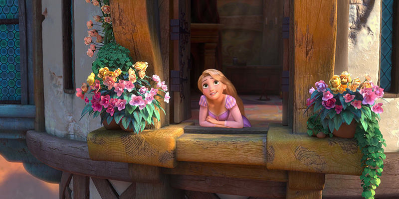
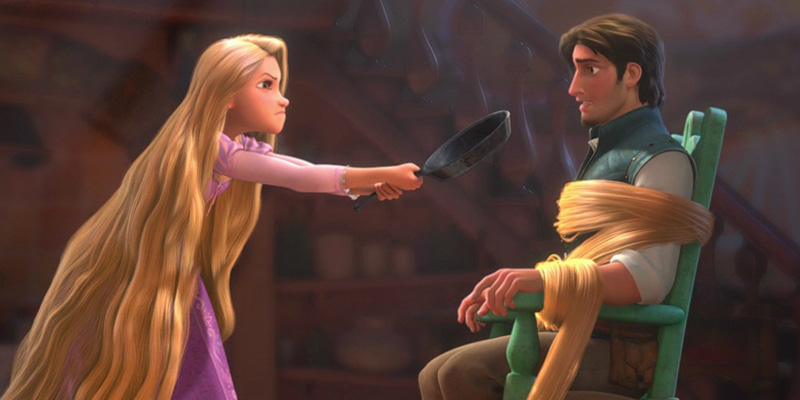
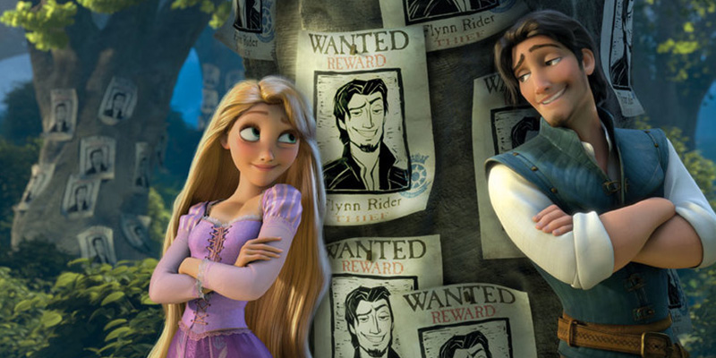
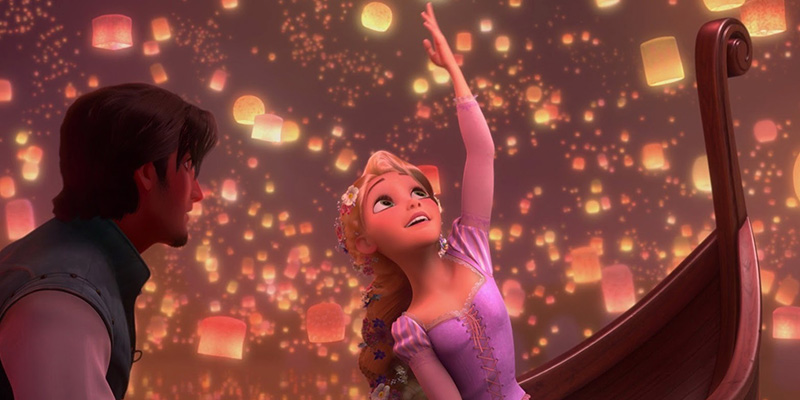
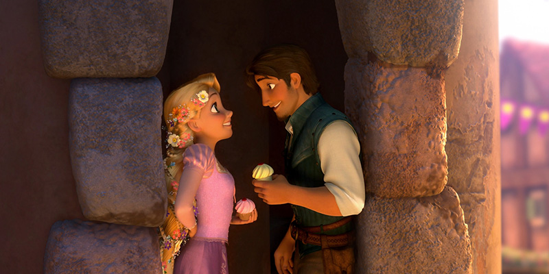
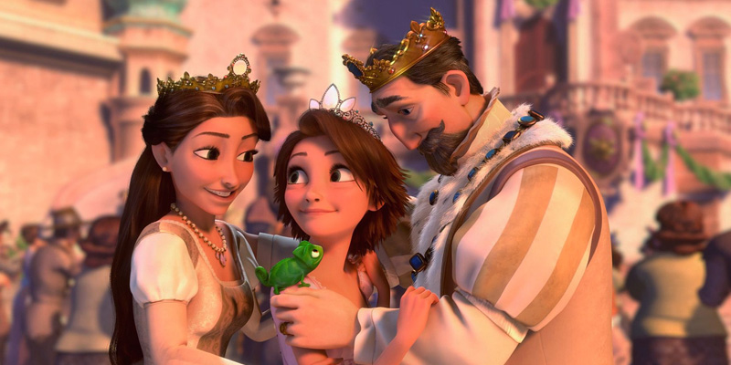

-

Being at home is so boring
The magically long-haired Rapunzel has spent her entire life in a tower, but now that a runaway thief has stumbled upon her, she is about to discover the world for the first time, and who she really is. After receiving the healing powers from a magical flower, the baby Princess Rapunzel is kidnapped from the palace in the middle of the night by Mother Gothel. Mother Gothel knows that the flower's magical powers are now growing within the golden hair of Rapunzel
-

First meeting with Flynn Rider
Rapunzel is now a teenager and her hair has grown to a length of 70-feet. The beautiful Rapunzel has been in the tower her entire life, and she is curious of the outside world. One day, the bandit Flynn Ryder scales the tower and is taken captive by Rapunzel. Rapunzel strikes a deal with the charming thief to act as her guide to travel to the place where the floating lights come from that she has seen every year on her birthday.
-

Road to the Kingdom
Once, a drop of the sun falls on Earth and grows a magic golden flower with the ability to heal the sick and injured. Mother Gothel sees the flower and hides it; then she finds that when she sings to the flower, she rejuvenates. Centuries pass and a kingdom is raised in the place where the flower is hidden. When the beloved Queen is about to have a baby, she gets sick and the only hope to save her is to find the magic flower.
-

So beautiful lights
But Mother Gothel does not want to share the sun's gift and keeps the flower hidden. However, the spot is found and the magic of the golden flower heals the Queen. When the Queen's daughter Rapunzel is born, she receives the healing power from the flower and Gothel abducts her to use her magic hair to stay young. Gothel raises Rapunzel as a daughter, without cutting her hair and locks her in a high tower in an isolated area.
-

Fall in love at a village festival
She keeps Rapunzel far from other people, telling that it is for her own protection. The King and the Queen celebrate the anniversary of their beloved daughter releasing lanterns to the sky, and Rapunzel dreams of leaving the tower to see the floating lights from the outside world. When the thief, cheater and liar Flynn Rider steals the crown with two bandits, he is chased by the royal guard. However, he double-crosses the other thieves and flees, and climbs the tower to hide.
-

The princess has finally returned
A long-lost princess with the longest hair imaginable named Rapunzel has spent her whole life in a lonely tower, dreaming of the world, waiting to discover it. When she finally starts to give up hope an escaped prisoner named Flynn Rider approaches Rapunzel's lonely tower and agrees to take her to see the lanterns that appear every day on her birthday if she would return his satchel filled with stolen jewels, including the lost princess's shiny crown. Flynn and Rapunzel embark on a journey that they will never forget and Rapunzel discovers who she really is.